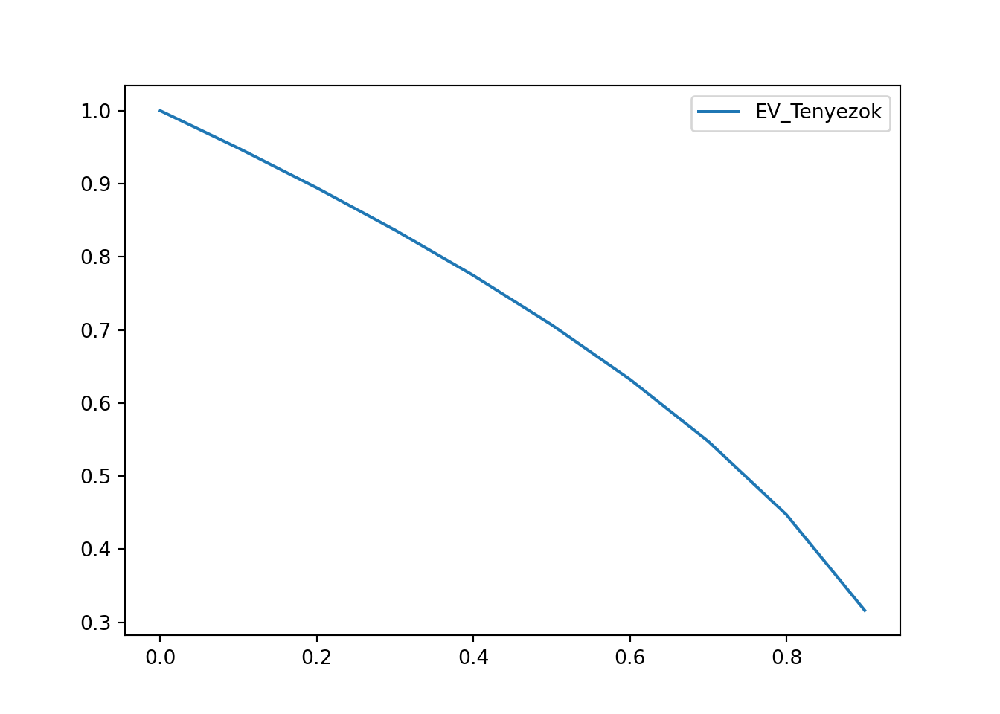

8 Becslések EV és R mintából
8.1 Intervallumbecslés visszatevés nélküli egyszerű véletlen (EV) mintákból
Az eddigi hetek tananyagában végig FAE, azaz visszatevéses mintavételekkel dolgoztunk. Most nézzük meg, hogy mia helyzet akko, ha a mintavételünk visszatevés nélküli véletlen mintavétel, azaz EV minta.
Az okoskodásunk onnan indul, hogy azt mondjuk, hogy ha a minta kiválasztási aránya kicsi, azaz ha a teljes adatsokaságunknak csak egy nagyon kis százalékát választjuk ki, akkor a FAE és EV mintavétel lényegében ugyan az. Hiszen ebben az esetben még FAE mintavétrel esetén is nagyon kicsi az esélye, hogy a visszatevés miatt ténylegesen ismétlődés legyen, azaz többször is kiválasszuk ugyan azt az egyedet a mintánkba.
A minta kiválasztási arányát korábbi jelöléseinkkel élve \(\frac{n}{N}\)-nek jelöljük. Tehát, ha \(\frac{n}{N} \rightarrow 0\), akkor \(FAE \approx EV\).
Ha viszont \(\frac{n}{N}\) egy nagyobb érték, akkor viszont az EV mintának pontosabbnak, azaz kisebb mintavételi hibájúnak kell lennie, minta FAE mintának, hiszen minden mintaelem az EV mintában biztos, hogy új információt hoz be a mintába, míg FAE esetben lehet ismétlődés a visszatevés miatt.
Ezt a tényt pedig úgy képezzük le a konfidencia-intervallum képleteinkben, hogy FAE mintavételeknél tanult standard hiba képleteket egyszerűen beszorozzuk \(\sqrt{1-\frac{n}{N}}\)-nel. Tehát: \[SH_{EV}=SH_{FAE} \times \sqrt{1-\frac{n}{N}}\]
Ez a képlet azért végzi azt, amit mi akarunk, mert ha nagyon \(0\) közeli a kiválasztási arány, akkor az \(SH_{FAE}\)-t gyakorlatilag \(1\)-gyel szorozzuk, azaz nem változtatunk rajta semmit. Ha pedig a kiválasztási arány érdemben nagyobb, mint \(0\), akkor pedig egy \(0\) és \(1\) közti számmal szorozzuk \(SH_{FAE}\)-t, így a szorzat ekkor biztosan kisebb lesz, mint \(SH_{FAE}\) volt.
Aki nem hiszi, nyugodtan kirajzoltathatja Pythonban, az EV korrekciós tényező, azaz a \(\sqrt{1-\frac{n}{N}}\) viselkedését különböző \(\frac{n}{N}\) kiválasztási arányok mellett:
# Elemzéshez és ábrázoláshoz szükséges csomagok betöltése
import numpy as np
import pandas as pd
import matplotlib.pyplot as plt
import scipy.stats as stats
# Üres lista létrehozása az EV tényezők tárolására
EV_Lista = []
# Vizsgált kiválasztási arányok listájának létrehozása
# 0% és 90% közötti arányokat nézünk 10%-pontos lépésközzel
# Felső határ 1 = 100% a nyílt intervallum miatt
KivalArany_Lista = np.arange(0, 1, 0.1)
# Ciklus indítása
for AktualisKivalArany in KivalArany_Lista:
EV_Lista.append(np.sqrt(1-AktualisKivalArany))
# Vizsgált kiválasztási arányok és a mért EV korrekciós tényezők data frame-be rendezése
# Ahol a kiválasztási arányok a sorindexek
EV_Data = pd.DataFrame(EV_Lista, columns=['EV_Tenyezok'], index = np.arange(0, 1, 0.1))
# Ábrázolás a 'plot' metódussal: nem kell paraméterezni, mert csak egy oszlopunk van
EV_Data.plot()
plt.show()
Látszik, hogy ahogy nő a kiválasztási arány, annál kisebb százalékát kell venni \(SH_{FAE}\)-nek az \(SH_{EV}\) számolása során. Éljen! :)
Nézzük meg ezt az egész rendszert a gyakorlatban az átlag intervallumbecslése során, nagy mintás esetben!
8.1.1 Átlag becslése EV mintákból
Töltsük be a HKF_Jovedelem.xlsx című Excel fájl tartalmát egy pandas data frame-be!
A táblában \(n=8306\) db magyar háztartás két ismérvét (oszlopát) látjuk:
- Milyen típusú településen található a háztartás (Község, Többi város, Nagyváros, Budapest)
- A háztartás éves jövedelmét 2019-ben, ezer Ft-ban kifejezve
Az adatok a KSH Jövedelmi és Életkörülmény Adatfelvételéből (rövidítve HKÉF vagy HKF) származnak. A KSH linkelt leírása szerint az adatok a magyar háztartások sokaságából visszatevés nélkül véletlen, azaz EV mintaként kezelhetők.
Ez alapján egy nagyon fontos infó, hogy 2019-ben a magyar háztartások teljes száma 4 111 240 db volt. Tehát, a sokaságunk teljes elemszáma \(N=4111240\) db.
Lássuk is a beolvasást a pandas data frame-be!
## <class 'pandas.core.frame.DataFrame'>
## RangeIndex: 8306 entries, 0 to 8305
## Data columns (total 3 columns):
## # Column Non-Null Count Dtype
## --- ------ -------------- -----
## 0 HaztartasID 8306 non-null int64
## 1 TelepulesTipus 8306 non-null object
## 2 EvesJovEFt 8306 non-null float64
## dtypes: float64(1), int64(1), object(1)
## memory usage: 194.8+ KBRemek: megvan a két keresett oszlopunk mind az \(n=8306\) db háztartásra, plusz egy ID oszlop az elején, amit nem fogunk semmire sem használni. :)
Ezek után simán bevethetjük az átlagos háztartási jövedelem \(99\%\)-os megbízhatóságú intervalumbecslésére a jól bevált stats.norm.interval című függvényt. Hiszen a \(\triangle=k \times SH\) képletben a nagy, \(n=8306\)-os elemszám miatt a megbízhatósági szorzó simán jöhet standard normális eloszlásból, azaz \(k=z_{1-\frac{\alpha}{2}}\). Az \(SH\) pedig akkor egy EV minta \(SH\)-ja, ami az előző fejezet alapján \(SH_{FAE} \times \sqrt{1-\frac{n}{N}}\) módon meghadható a függvény scale paraméterében.
N = 4111240
n = len(HKF)
stats.norm.interval(
confidence=0.99,
loc=np.mean(HKF.EvesJovEFt),
scale=stats.sem(HKF.EvesJovEFt)*np.sqrt(1-n/N))## (4567.729318773609, 4730.116789870932)Tehát, viszzatevés nélküli véletlen mintavételként kezelve a HKF adatokat,azt kapjuk, hogy egy átlagos magyar háztartás éves jövedeleme \(4568\) és \(4730\) ezer Ft, azaz \(4.5\) és \(4.7\) millió Ft között mozog \(99\%\)-os valószínűséggel.
A kiválasztási arányunk ugyebármost nagyon kicsi: \(\frac{n}{N}=\frac{8306}{4111240}=0.002\), szóval az eredmény lényegében nem különbözik attól, mintha az egészet az EV korrekciós szorzó nélkül csináltuk volna végig a műveletet:
## (4567.647175824164, 4730.198932820376)A várható éves jövedelem így is kb. \(4.5\) és \(4.7\) millió Ft között mozog \(99\%\)-os valószínűséggel.
8.1.2 Arány becslése EV mintákból
Ugyan ez a logika teljesen jól működik az arányok becslése esetén is. Ez nem véletlen, hiszen letisztáztuk az 5. heti tananyagban, hogy az arány, mint statisztikai mutató valójában egy olyan adatsor átlaga, hogy az arányban vizsgált tuljadonsággal bíró megfigyelések \(1\)-gyel vannak kódolva, a többiek pedig \(0\)-val.
Csináljuk is meg egy új oszlopban azt a \(0-1\) adatsort, amivel mondjuk a budapesti háztartások aránya becsülhető lesz.
## 0.18552853359017576Szuper, meg is vagyunk, a megfigyelt mintában a budapesti háztartások aránya \(18.55\%\).
Ezek után, ha ezen az új oszlopon alkalmazzuk a stats.norm.interval függvényt az 1.1. fejezetben látott módon a scale paraméterben a \(\sqrt{1-\frac{n}{N}}\) korrekciós tényezővel, akkor meg is van a budapesti háztartások sokaságiarányának \(99\%\)-os megbízhatóságú intervallumbecslése:
N = 4111240
n = len(HKF)
stats.norm.interval(
confidence=0.99,
loc=np.mean(HKF.BP_e),
scale=stats.sem(HKF.BP_e)*np.sqrt(1-n/N))## (0.1745523489357643, 0.19650471824458723)Szóval az összes magyar háztartásból kb. \(17.5\% - 19.6\%\) lehet budapesti, \(99\%\) valószínűséggel.
8.2 Átlag becslése Arányosan Rétegzett (AR) mintákból
A KSH a HKF adatbázisáról nem csak simán azt állítja, hogy egyszerű véletlen (EV) minta a magyar háztartásokból, hanem, hogy településtípus szerint arányosan rétegzett EV mita. Ez azt jelenti, hogy a \(4\) db településtípusból (Budapest, Nagyváros, Többi város, Község) külön-külön vettek EV mintát, úgy, hogy a végső \(n=8306\) elemű mintában az egyes településtípusok aránya annyi legyen, mint a teljes sokaságban (összes magyar háztartás) a településtípusok aránya. Tehát a minta tökéletesen reprezentatívra lett beállítva a településtípusra.
Ennek a mintavételi technikának a lényege, hogy ha meg akarom becsülni a magyar háztartások átlagos éves jövedelmét, akkor a standard hibában NEM KELL számolnom a településtípusok KÖZÖTTI jövedelem szórással! Hiszen ezt a külső szórást már kezelte a településtípusonkénti külön-különmintavétel!!
Magyarul, az \[SH_{EV} = \frac{s}{\sqrt{n}} \times \sqrt{1-\frac{n}{N}}\]
Képlet helyett elég a standard hibában csak a belső korrigált mintaszórással, \(s_b\)-vel számolnom: \[SH_{AR} = \frac{s_b}{\sqrt{n}} \times \sqrt{1-\frac{n}{N}}\]
Mivel Stat. I-ből és az 1. heti tananyag 4. fejezetéből tudjuk, hogy egy számértékű ismérv teljes varianciája, a külső és belső variancia összege, így ha a külső variancával nem kel számolni a standard hibában, csak a belsővel, akkor kijelenthető, hogy az arányosan rétegzett mintavétel becslési hibája az átlagra kisebb, mint az EV (vagy a FAE) mintavételek esetén: \(SH_{AR} \leq SH_{EV}\)
Nézzük is meg akkor a dolgot élesben! Ugyebár tudjuk, hogy a háztartások átlagos éves jövedeleme a teljes magyar népességben \(99\%\)-os valószínűséggek \(4.5\) és \(4.7\) millió Ft körül mozog, ha a HKF adatokat EV mintavételként kezeljük. Most a SH-t rendesen a \(SH_{EV}=\frac{s}{\sqrt{n}} \times \sqrt{1-\frac{n}{N}}\) képlettel számoljuk ki, és nem vetjük be a stats.sem függvényt.
N = 4111240
n = len(HKF)
s = np.std(HKF.EvesJovEFt)
sh_ev = s/np.sqrt(n)*np.sqrt(1-n/N)
stats.norm.interval(
confidence=0.99,
loc=np.mean(HKF.EvesJovEFt),
scale=sh_ev)## (4567.734206576373, 4730.111902068167)Viszont, azt mondja az AR minta, hogy a standard hiba \(\frac{s}{\sqrt{n}}\) részében elég csak a településtípusok szerinti belső szórással, \(s_b\)-vel számolni. Ehhez viszont kell egy aggregált tábla településtípusonként a
- mintaelemszámokról (\(n_j\))
- mintaátlagokról (\(\bar{y}_j\))
- korrigált mintaszórásokról (\(s_j\))
- sokasági elemszámokról (\(N_j\))
Láthatjuk, hogy a településtípusokat, azaz a rétegzett mintavétel rétegeit \(j\) indexszel jelöljük. Ezt az aggregált táblát a data frame-k groupby és agg metódusaival könnyen összehozhatjuk, ahogy az 1. heti tananyag 4. fejezetében is láthattuk pl.
Segéd = HKF.groupby('TelepulesTipus').agg(
Elemszam = ('EvesJovEFt', 'count'),
Reszatlagok = ('EvesJovEFt', np.mean),
KorrigalatlanSzorasok = ('EvesJovEFt', np.std)
)## <string>:1: FutureWarning: The provided callable <function mean at 0x00000135D71513A0> is currently using SeriesGroupBy.mean. In a future version of pandas, the provided callable will be used directly. To keep current behavior pass the string "mean" instead.
## <string>:1: FutureWarning: The provided callable <function std at 0x00000135D71514E0> is currently using SeriesGroupBy.std. In a future version of pandas, the provided callable will be used directly. To keep current behavior pass the string "std" instead.## Elemszam Reszatlagok KorrigalatlanSzorasok
## TelepulesTipus
## Budapest 1541 5395.202989 3686.786788
## Község 2765 4344.417552 2580.432303
## Nagyváros 1786 4790.141025 2803.906596
## Többi város 2214 4395.863000 2516.663955A fenti kód nem korrigált szórásokat számol technikailag, de a mi szempontunkból ez most nem oszt nem szoroz, mert a legkisebb elemszámú rétegben (\(n_{BP}=1541\)) is a korrekció csak \(\sqrt{\frac{n}{n-1}}=\sqrt{\frac{1541}{1541-1}}=1.0006\), tehát elhanyagolható szorzótényező.
De bármikor tudjuk alkalmazni a korrekciós tényezőt a szórásokon egy új oszlopban:
Segéd['KorrigaltSzorasok'] = np.sqrt(Segéd.Elemszam/(Segéd.Elemszam-1)) * Segéd.KorrigalatlanSzorasok
Segéd## Elemszam Reszatlagok KorrigalatlanSzorasok KorrigaltSzorasok
## TelepulesTipus
## Budapest 1541 5395.202989 3686.786788 3687.983602
## Község 2765 4344.417552 2580.432303 2580.899054
## Nagyváros 1786 4790.141025 2803.906596 2804.691894
## Többi város 2214 4395.863000 2516.663955 2517.232500Viszont a rend kedvéért egészítsük ki az aggregált segédtáblát a sokasági elemszámokkal. Itt kihasználjuk, hogy arányosan rétegzett mintavételről van szó. Tehát, a rétegek sokasági elemszáma a teljes sokasági elemszámhoz úgy aránylik, mint a rétegek mintabeli elemszáma a teljes mintavétel elemszámához, azaz \[\frac{n_j}{n} = \frac{N_j}{N}, \forall j\]
Ebből gyorsan ki tudjuk számolni minden réteg sokasági elemszámát, hiszen tudjuk, hogy \(N=4111240\) háztartást jelent. A végén természetesen egészre kerekítjuk az \(N_j\)-ket:
## Elemszam Reszatlagok ... KorrigaltSzorasok SokasagiElemszam
## TelepulesTipus ...
## Budapest 1541 5395.202989 ... 3687.983602 762752.0
## Község 2765 4344.417552 ... 2580.899054 1368598.0
## Nagyváros 1786 4790.141025 ... 2804.691894 884021.0
## Többi város 2214 4395.863000 ... 2517.232500 1095869.0
##
## [4 rows x 5 columns]Ezzel is megvagyunk. Akkor minden adott, hogy kiszámoljuk a belső szórást a következő képlettel, ami szintén ismerős az 1. heti tananyag 4. fejezetéből. \[s_b=\sqrt{\frac{\sum_j{n_j \times s_j^2}}{n}}\]
Ezt gyorsan ki is tudjuk számolni Pythonban numpy függvények segítségével.
belső_szórás = np.sqrt(np.sum(Segéd.Elemszam * Segéd.KorrigaltSzorasok**2)/np.sum(Segéd.Elemszam))
belső_szórás## 2849.7867055139272Tehát, egy konkrét háztartás éves jövdeleme a megfigyelt mintában várhatóan kb. \(s_b=\pm 2.849\) milió Ft-tal (2849 ezer Ft-tal)** tér el saját településtípusának átlagos jövedelmétől**.
Ha a 3. heti tananyag 3. fejezetében bemutatott számolási módját veszem figyelembe a korrigált mintaszórásnak, ami szerint \(s^2=\sqrt{\sum_{i=1}^{n}{(y_i-\bar{y})^2}/(n-1)}\), akkor úgy lenne korrekt, hogy ha a belső szórást számoló formulában is mindenhol az \(n\)-t és \(n_j\)-ket \(n-1\)-nek és \(n_j-1\)-eknek venni, mint a “sima” \(s^2\) nevezőjében. Tehát, a korrigált szórás sajátosságait figyelembe vevő belső szórás képlet a következő: \[s_b=\sqrt{\frac{\sum_j{(n_j-1) \times s_j^2}}{n-1}}\]
Ezt is gyorsan ki is tudjuk számolni Pythonban numpy függvények segítségével.
belső_szórás_korrekcióval = np.sqrt(np.sum((Segéd.Elemszam-1) * Segéd.KorrigaltSzorasok**2)/(len(HKF)-1))
belső_szórás_korrekcióval## 2849.2301124754485Látjuk, hogy az eredmények érdemben különböznek egymmástól, mert a rétegek mintaelemszámai nagyok (ezres nagyságrendűek), így \(\pm1\) ide-oda nem számít. :)
## [2849.7867055139272, 2849.2301124754485]Kisebb elemszámoknál (olyan \(n_j\approx30\) körül) viszont már jelentős lehet a különbség, és érdemesebb az \(n_j-1\)-eket használó formulát alkalmazni, mert az konzisztens a korrigált szórás formulájával.
Mi most a rétegek nagy elemszámai, tehát az ezres nagyságrendű \(n_j\)-k miatt az először kiszámolt belső_szórás értékkel megyünk tovább.
Ha van első szórásunk, akkor pedig gyorsan meg is van az arányosan rétegzett standard hiba, ami kb. \(0.28\) ezer Ft-tal (\(280\) Ft-tal) kisebb, mint a sima EV módra számolt standard hiba:
## 31.23757005707566## 31.519498452027698Ez pedig érezteti magát a némlileg szűkebb, azaz kisebb \(\triangle=SH_{AR} \times z_{1-\frac{\alpha}{2}}\) becslési hibahatárral bíró \(99\%\)-os konfidencia-intervallumban:
## (4568.460405997593, 4729.385702646948)Arányos rétegzéssel a változatlan megbízhatóságú konfidencia-intervallum \(4567 - 4730\) ezer Ft-ról \(4568 - 4729\) ezer Ft-ra szűkül.
Na jó, ne áltassunk magunkat: ez szinte nulla csökkenés mind a standard hibában, mind a \(\triangle\)-ben! Tehát kb az \(AR\) mintavétel nem ért semmit. Miért van ez? Lássuk a magyarázatot!
8.2.1 Az AR mintavételek hatékonysága
Az, hogy mennyire jó az \(AR\) mintavétel az \(EV\)-hez képest attól függ, hogy mekkora a külső szórás mértéke, amit el tudunk hagyni azzal, hogy csak a belső szórással számolunk a standard hibában a teljes szórás helyett. Ezt pedig az határozza meg, hogy a rétegzéshez használt minőségi ismérv hány százalékban határozza meg annak a mennyiségi ismérvnek az alakulását, aminek az átlagát becsülni szeretnénk.
Magyarul a variancia-hányados kell nekünk: \[H^2 = \frac{s_k^2}{s^2} = 1-\frac{s_b^2}{s^2}\]
És hát valóban a 2. képlettel kiszámolva azt láthatjuk, hogy a településtípus alig határozza csak meg a háztartások éves jövdelemének alakulását:
## 1.78Mindössze \(1.78\%\)-ban magyarázza a jövdelemek alakulását a településtípus. Ez megegyezik azzal hány SZÁZALÉKKAL csökkenti az AR mintavétel az EV standard hiba négyzetét:
## -1.78Másképpen fogalmazva az arányos rétegzés annyi SZÁZALÉKRA csökkenti a \(SH^2\)-et, amennyi az \(1-H^2\) értéke. Innentől kezdve ezt a csökkentés hívjuk relatív hatásfoknak, azaz: \[Rel=\frac{SH_{AR}^2}{SH_{EV}^2}=1-H^2=\frac{s_b^2}{s^2}\]
Ezek az összefüggések Pythonban is szépen kiszámíthatók.
## 0.9821908631514376## 0.9821908631514374Tehát, az arányos rétegzés miatt \(98.2\%\)-RA csökken csak a standard hiba négyzete.
Természetesen az, hogy maga a standard hiba hány százalékRA csökken, azt a fenti összefüggés, zóval a relatív hatásfok gyöke adja meg.
## 0.991055428899634## 0.991055428899634Szóval, a standard hiba az arányos rétegzés miatt csak \(99.1\%\)-RA, azaz \(0.9\%\)-KAL csökkent csak le, mivel a rétegzéshez használt településtípus csak \(1.78\%\)-ban magyarázza csak az éves jövedelmek alakulását, aminek az alakulását becsülni akartuk.
Mindazonáltal az átlagbecslés háromféle mintavételi mód (FAE, EV, AR) szerinti standard hibája között felállítható a következő összefüggés: \[SH_{FAE} \geq SH_{EV} \geq SH_{AR}\]
Hiszen az EV standard hiba valamivel kisebb, mint a FAE a \(\sqrt{1-\frac{n}{N}}\) korrekciós tényező miatt, és az AR standard hiba valamivel kisebb, mint az EV amiatt, mert csak belső szórást használunk a képletben a teljes helyett: \[\frac{s}{\sqrt{n}} \geq \frac{s}{\sqrt{n}} \times \sqrt{1-\frac{n}{N}} \geq \frac{s_b}{\sqrt{n}} \times \sqrt{1-\frac{n}{N}}\]